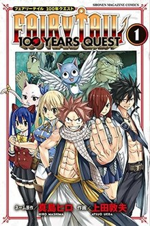

fairy tail: 100 years quest
One year following the demise of Zeref and Acnologia, Natsu Dragneel and his team from the Fairy Tail wizard guild disembark to the continent of Guiltina in northern Earthland for the 100 Years Quest, a mission that has been unaccomplished for over a century. Their client, the immortal Dragon Slayer Elefseria, reveals that the quest's purpose is to seal renegade dragons called the Five Dragon Gods—Selene, Ignia, Mercphobia, Aldoron, and Viernes—each of whom rivals Acnologia in strength and threatens to cause worldwide destruction. Natsu subdues Mercphobia with aid from Ignia, Igneel's malicious biological son, who challenges Natsu to strengthen himself for a one-on-one battle.
Meanwhile, Fairy Tail recruits a new member, Touka, unaware that she is merged with another wizard named Faris. Claiming to be the White Wizard, the century-old leader of a malevolent white magic cult, Faris brainwashes Fairy Tail in a crusade to erase sources of powerful magic. Once Natsu's team rescues their guildmates, Wendy Marvell separates Touka and Faris after Selene deceives Faris into awakening the slumbering Aldoron, who is killed by Natsu. Despite Faris's actions, the team saves her and Touka's home, the parallel world of Elentear, after learning that Selene has been blackmailing Faris with Elentear's destruction.
Selene seizes control of Diabolos—a Dragon Slayer guild that feuds with Fairy Tail over the 100 Years Quest—to retrieve knowledge of Athena, a weapon built by Elefseria's pupil for use against the Five Dragon Gods. However, Fairy Tail and Diabolos are forced to unite against Ignia's ally Dogramag, a sixth Dragon God believed to have been slain by Elefseria, who ends hostilities with Selene after Natsu kills Dogramag. Further investigation reveals Athena to be the true, mechanical White Wizard utilized by Gold Owl, an alchemist guild formed from Viernes's disembodied will. Persuaded by Lucy Heartfilia to rebel, Athena helps Natsu kill Viernes by restoring the dragon's physical form.
the last remaining Dragon God, Ignia reveals his plan to destroy humanity by recreating the Dragon King Festival, a historic event in which Acnologia exterminated the dragon race. To this end, he uses Dogramag's power of resurrection to revive the slain Dragon Gods, and casts a spell that drives all four dragons berserk and transforms Guiltina's population into dragons. The battle is joined by Faris's counterpart native to Earthland, a black wizard imbued with power from Acnologia's dismembered arm.